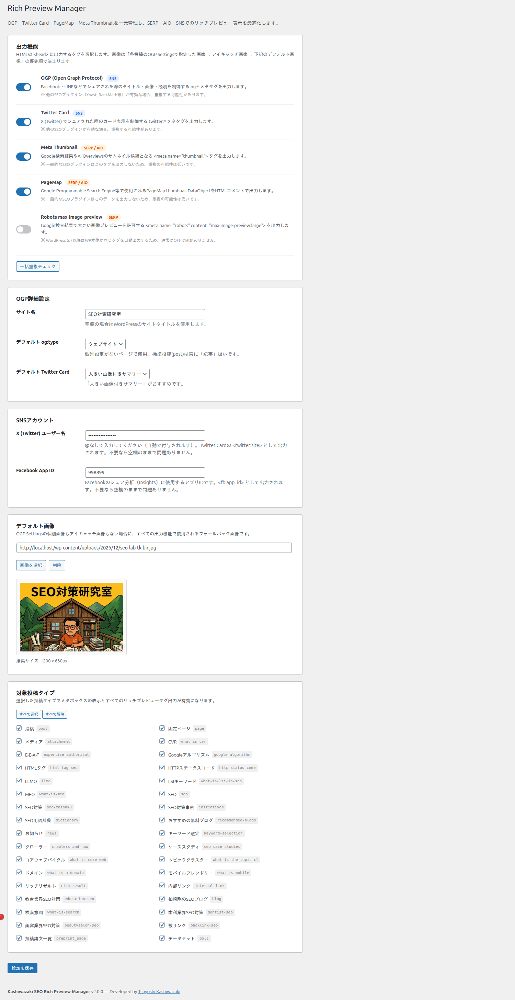
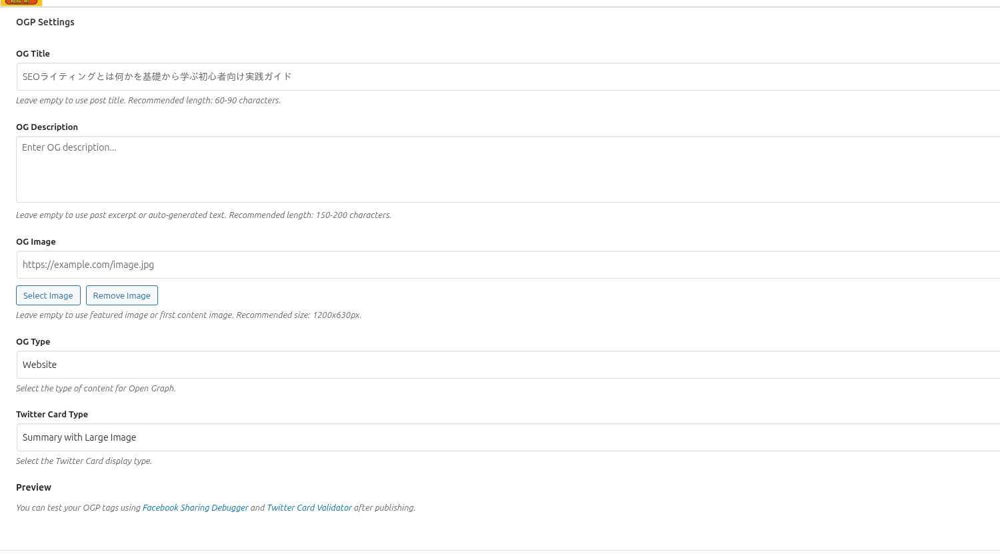

設定・メタボックス マニュアル
Kashiwazaki SEO Rich Preview Manager のグローバル設定、投稿別メタボックス、画像優先順位、出力形式、フィルター一覧を解説します。
グローバル設定（ksrpm_options）
設定画面で管理するすべてのオプション項目です。これらは wp_options テーブルに ksrpm_options キーで保存されます。

| 設定項目 | 説明 |
|---|---|
| enable_ogp | OGPメタタグの出力を有効化（true/false） |
| enable_twitter_card | Twitter Card メタタグの出力を有効化（true/false） |
| enable_meta_thumbnail | Meta Thumbnail タグの出力を有効化（true/false） |
| enable_pagemap | PageMap DataObject の出力を有効化（true/false） |
| enable_robots_max_image | robots max-image-preview メタタグの出力を有効化（true/false） |
| site_name | og:site_name に使用するサイト名。空欄時はWordPressのサイトタイトルを使用 |
| default_og_type | 投稿のデフォルト og:type（article、blog など）。トップページは自動的に website |
| default_twitter_card | デフォルトの Twitter Card タイプ（summary または summary_large_image） |
| default_image | フォールバック用デフォルト画像のURL |
| fb_app_id | Facebook App ID（fb:app_id メタタグに使用） |
| twitter_username | Twitterユーザー名（@付き、twitter:site に使用） |
| post_types | メタタグを出力する投稿タイプの配列（例: post, page） |
| enable_duplicate_checker | 重複メタタグ検出チェッカーの有効化（true/false） |
投稿別メタボックス
投稿編集画面に表示される「Rich Preview 設定」メタボックスから、投稿ごとにリッチプレビュー情報をカスタマイズできます。ここで設定した値は、グローバル設定よりも優先されます。データは post_meta に _ksrpm_* プレフィックスで保存されます。

メタボックスの設定項目
| 項目 | 説明 |
|---|---|
| OG Title | og:title、twitter:title に使用されるタイトル。空欄の場合は投稿タイトルが使用されます。 |
| OG Description | og:description、twitter:description に使用される説明文。空欄の場合は投稿の抜粋が使用されます。 |
| OG Image | og:image、twitter:image、Meta Thumbnail、PageMap に使用される画像URL。メディアライブラリから選択可能です。 |
| OG Type | og:type の値（article、blog、product など）。空欄の場合はグローバル設定のデフォルト値が使用されます。 |
| Twitter Card Type | twitter:card の値（summary または summary_large_image）。空欄の場合はグローバル設定のデフォルト値が使用されます。 |
SNSでのシェア時に最適な表示にするため、OG Titleは25〜35文字程度、OG Descriptionは80〜120文字程度を目安に設定してください。
画像優先順位チェーン
リッチプレビューに使用される画像は、以下の優先順位で決定されます。すべての出力タイプ（OGP、Twitter Card、Meta Thumbnail、PageMap）で共通のロジックです。
カスタムOGP画像（メタボックスで設定した _ksrpm_og_image）
投稿のアイキャッチ画像（Featured Image）
グローバル設定のデフォルト画像（ksrpm_options の default_image）
デフォルト画像が未設定で、投稿にアイキャッチ画像もない場合、画像関連のメタタグは出力されません。SNSでのシェア表示を確実にするため、デフォルト画像の設定を推奨します。

出力形式の例
本プラグインは wp_head アクションで以下のメタタグを出力します。
OGPタグ
<meta property="og:title" content="記事タイトル">
<meta property="og:description" content="記事の説明文">
<meta property="og:image" content="https://example.com/image.jpg">
<meta property="og:url" content="https://example.com/post/">
<meta property="og:type" content="article">
<meta property="og:site_name" content="サイト名">
<meta property="fb:app_id" content="123456789">Twitter Cardタグ
<meta name="twitter:card" content="summary_large_image">
<meta name="twitter:title" content="記事タイトル">
<meta name="twitter:description" content="記事の説明文">
<meta name="twitter:image" content="https://example.com/image.jpg">
<meta name="twitter:site" content="@example">Meta Thumbnail
<meta name="thumbnail" content="https://example.com/image.jpg">PageMap
<!--
<PageMap>
<DataObject type="thumbnail">
<Attribute name="src" value="https://example.com/image.jpg">
<Attribute name="width" value="1200">
<Attribute name="height" value="630">
</DataObject>
</PageMap>
-->robots max-image-preview
<meta name="robots" content="max-image-preview:large">重複メタタグ検出チェッカー
設定画面で「重複チェッカー」を有効化すると、他のプラグインやテーマが出力するOGP/Twitter Cardメタタグとの重複を検出し、管理画面に警告を表示します。
| 検出対象 | 説明 |
|---|---|
| OGPタグの重複 | og:title、og:description、og:image など同一プロパティの複数出力を検出 |
| Twitter Cardタグの重複 | twitter:card、twitter:title など同一nameの複数出力を検出 |
| robotsタグの重複 | max-image-preview 指定が複数存在する場合を検出 |
他のSEOプラグイン（Yoast SEO、All in One SEO Pack など）がOGPタグを出力している場合、重複が検出されます。他プラグインのOGP出力機能を無効にしてください。
フィルターリファレンス（主要10件）
本プラグインは34種類以上のカスタムフィルターを提供しています。以下はよく使用される主要なフィルターです。
| フィルター名 | 説明 |
|---|---|
| ksrpm_og_title | og:title の値をフィルタリング |
| ksrpm_og_description | og:description の値をフィルタリング |
| ksrpm_og_image | og:image の値をフィルタリング |
| ksrpm_og_url | og:url の値をフィルタリング |
| ksrpm_og_type | og:type の値をフィルタリング |
| ksrpm_twitter_card | twitter:card の値をフィルタリング |
| ksrpm_twitter_image | twitter:image の値をフィルタリング |
| ksrpm_meta_thumbnail | Meta Thumbnail の画像URLをフィルタリング |
| ksrpm_pagemap_data | PageMap DataObject の属性配列をフィルタリング |
| ksrpm_meta_tags | 出力されるすべてのメタタグの配列をフィルタリング |
フィルターの使用例
// og:title にサイト名を追加する例
add_filter('ksrpm_og_title', function($title) {
return $title . ' | ' . get_bloginfo('name');
});
// 特定のカテゴリでOGP画像を固定する例
add_filter('ksrpm_og_image', function($image) {
if (has_category('news')) {
return 'https://example.com/news-ogp.jpg';
}
return $image;
});
// PageMapデータをカスタマイズする例
add_filter('ksrpm_pagemap_data', function($data) {
$data['alt'] = get_the_title();
return $data;
});フィルターで返す値は必ずサニタイズ済みの文字列にしてください。URLの場合は esc_url()、テキストの場合は esc_attr() を使用することを推奨します。